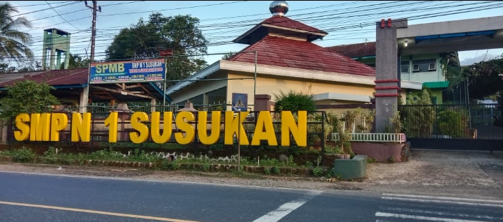

✨ Portal Pembelajaran dan Perangkat Guru PAIBP SMP
Belajar utuh. Mengajar terarah.
PAIBP SMART SMP menyatukan materi lengkap, ringkasan, LKPD, progres murid, perangkat pembelajaran guru, layanan Islami, dan game edukatif kelas VII–IX.
Tamu Guru Terkini
Kunjungan guru
Belum ada kunjungan guru yang tercatat.
PAIBP SMART SMP
Pilih ruang yang dibutuhkan
Lima ruang utama di atas sudah aktif dan memiliki isi sesuai fungsinya.
Lima ruang dalam satu ekosistem pembelajaran
Akses materi, latihan, LKPD, perangkat guru, layanan Islami, game edukatif, dan kendali editor dalam satu portal yang terintegrasi.
🎒 Ruang Murid
30 Paket Belajar PAIBP Kelas VII–IX
Setiap bab diolah dari modul terlampir menjadi materi, ringkasan, latihan, LKPD interaktif, dan berkas tugas yang dapat dikirim kepada guru.
0/30bab selesai
Kelas
Semester
📖 Materi📝 Ringkasan📋 LKPD
Validasi ketuntasan bab
Selesaikan seluruh komponen sebelum bab dapat ditandai selesai.
Pilih bab
🧑🏫 Ruang Guru
Tahun Ajaran 2026/2027
Perangkat Pembelajaran PAIBP Fase D
Dokumen kerja Tahun Ajaran 2026/2027 yang dapat disaring per kelas, dicetak, disimpan sebagai PDF, dan diunduh.
Kelas
🕌 Fitur Islami
Hari ini
Pusat Fitur Islami
Menu terinspirasi kebutuhan Hijrah App: Al Qur'an, Hisnul Muslim, dzikir, kalender ibadah, jadwal sholat, dan nasihat bersumber.
Jadwal Sholat Hari Ini
Memuat jadwal untuk wilayah Kecamatan Susukan…
Imsak--:--
Subuh--:--
Dzuhur--:--
Ashar--:--
Maghrib--:--
Isya--:--
Waktu aktif
Menunggu jadwal
Hitung mundur akan tampil setelah jadwal dimuat.
Pengingat belajar hari ini—
Al Qur'an Digital
Masukkan nomor surat 1–114. Surat yang pernah dibuka disimpan untuk dibaca kembali saat luring.
Silakan buka surat.
Teks dan audio dimuat dari Al Quran Cloud. Audio dapat diputar luring setelah tombol “Simpan audio luring” berhasil diselesaikan saat tersambung internet.
Hisnul Muslim Pilihan
Doa harian dengan teks Arab, makna ringkas, jumlah bacaan, dan sumber.
Dzikir Pagi
Bacaan pilihan bersumber. Baca dengan tertib dan pahami maknanya.
Dzikir Petang
Bacaan pilihan bersumber. Baca dengan tertib dan pahami maknanya.
Tanggal Hijriah dihitung oleh kalender perangkat dan dapat berbeda satu hari dari keputusan resmi pemerintah/hasil rukyat. Gunakan sebagai panduan awal.
Puasa wajib
Puasa sunnah
Dilarang berpuasa
Sejarah Islam
Libur nasional
Peringatan umum
Kalender pendidikan
Akademi Bahasa Arab
Setiap tingkat Dasar, Menengah, Mahir, dan Percakapan memuat 100 tab. Setiap tab berisi 100 soal berurutan dengan pemeriksaan benar/salah, perpindahan otomatis, skor, progres, dan suara Arab perangkat.
Pilih salah satu tab untuk memulai 100 soal latihan.
Empat tingkat memuat 400 tab dan 40.000 soal yang dibangkitkan saat tab dipilih agar tetap ringan di hape. Materi, sesi, dan progres tersedia luring. Pemutar memilih suara Arab perangkat secara otomatis.
Nasihat Harian Bersumber
Berubah otomatis setiap hari dan dapat diganti dengan sekali klik. Nomor hadits/bab ditampilkan; halaman hanya dicantumkan bila edisi sudah diverifikasi.
Kebijakan sumber: PAIBP SMART tidak mengarang nomor halaman. Karena halaman kitab berbeda menurut edisi, sumber memakai surat/ayat, nomor hadits, atau nama bab. Intisari editorial selalu ditandai.
🎮 Fitur Games
PAIBP Quest — 100 Games Edukatif
Setiap game berisi 20 soal acak per sesi. Setelah dimulai, selesaikan seluruh soal sebelum membuka game lain atau keluar.
0/20skor saat ini • kombinasi sesi > 1 triliun
100 game tersedia
Arena dikunci
Selesaikan 20 soal. Pemilihan arena dan tombol keluar akan terbuka setelah soal terakhir.
Tekan “Mulai Games” untuk menampilkan soal.
Ketuntasan materi0%
✍️ Ruang Editor
Kendali Konten dan Tanggapan
Kelola teks beranda, dokumentasi Spensus, statistik, komentar, rating, dan balasan editor.
Sunting teks utama beranda
Spensus Terkini
Tambah foto kegiatan, ubah judul, tanggal, ringkasan, atau hapus dokumentasi.
Kunjungan guru terbaru
Nama, unit kerja, NIP bila diisi, waktu, dan aktivitas akses.
| Waktu | Nama | Unit kerja | NIP | Aktivitas |
|---|---|---|---|---|
| Belum ada data guru. | ||||
Moderasi tanggapan
Balas, tampilkan, sembunyikan, atau hapus komentar dan rating.
Identitas dan Arah Pengembangan
Berangkat dari kebutuhan pembelajaran nyata
PAIBP SMART SMP dikembangkan untuk membantu murid belajar mandiri sekaligus memudahkan guru mengelola perangkat pembelajaran secara tertib.
- Materi disusun per bab, tidak berhenti pada ringkasan.
- LKPD mengarahkan analisis, penerapan, proyek, dan refleksi.
- Perangkat guru terhubung dengan 30 bab kelas VII–IX.
- Progres hanya tersimpan pada perangkat dan tidak memerlukan login.

Selayang Pandang
SMP Negeri 1 Susukan
Identitas sekolah, keluarga besar Spensus, dan ruang dokumentasi kegiatan.
Tenaga Pendidik
Kepala sekolah dan profil guru SMP Negeri 1 Susukan disajikan ringkas dan mudah ditelusuri.
Geser ke samping untuk melihat profil lainnya.
Tenaga Kependidikan
Profil tenaga kependidikan SMP Negeri 1 Susukan.
Geser ke samping untuk melihat profil lainnya.
Spensus Terkini
Dokumentasi Kegiatan
Informasi dan dokumentasi kegiatan terbaru SMP Negeri 1 Susukan.
Belum ada dokumentasi yang diterbitkan
Pengelola dapat menambahkan foto, judul, tanggal, dan ringkasan kegiatan melalui akses admin.
Akses Admin
Editor Spensus Terkini
Tambahkan foto dan informasi kegiatan. Perubahan tersimpan pada perangkat ini dan dapat disinkronkan apabila rekap daring telah diaktifkan.
Suara Pengguna
Komentar dan rating
Bagikan pengalaman menggunakan PAIBP SMART SMP. Masukan yang santun membantu portal ini terus berkembang.
Tanggapan terbaru
Belum ada tanggapan.
Statistik Pengunjung
Portal yang tumbuh bersama penggunanya
Angka menampilkan kunjungan berperan yang tercatat dan tidak memasukkan sesi editor/admin.